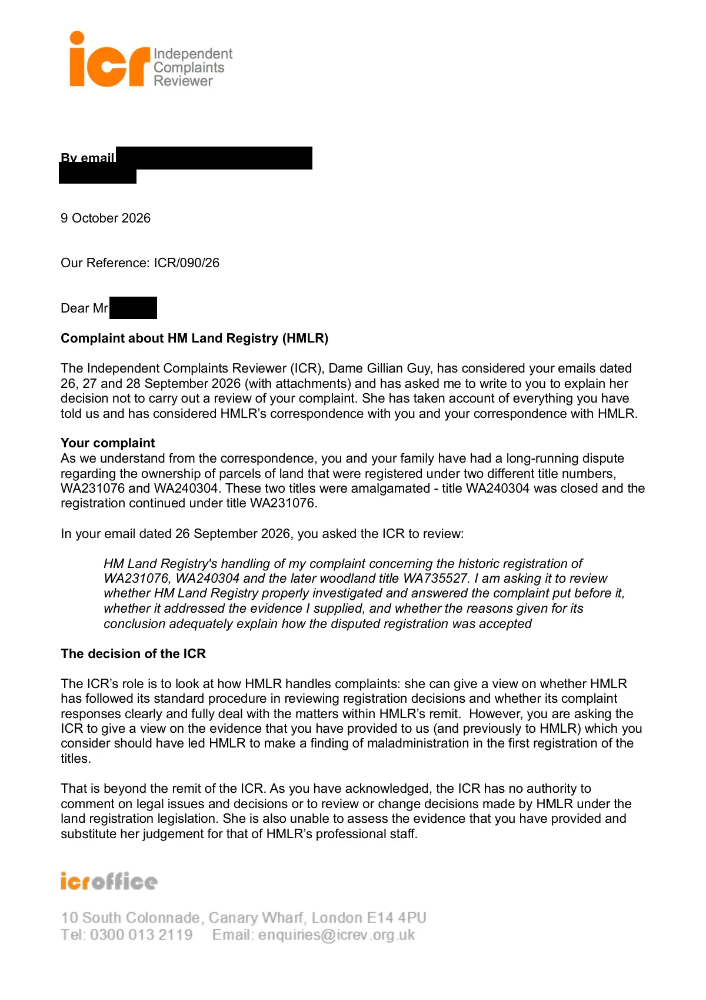

GHF-E106-R112-A1 correspondence (no disclosure)
ICR09026-Blank letter R7-01102026.pdf

Transcript
By email to:[email redacted] Requester 9 October 2026 Our Reference: ICR/090/26 Dear Requester Complaint about HM Land Registry (HMLR) The Independent Complaints Reviewer (ICR), Dame Gillian Guy, has considered your emails dated 26, 27 and 28 September 2026 (with attachments) and has asked me to write to you to explain her decision not to carry out a review of your complaint. She has taken account of everything you have told us and has considered HMLR’s correspondence with you and your correspondence with HMLR. Your complaint As we understand from the correspondence, you and your family have had a long-running dispute regarding the ownership of parcels of land that were registered under two different title numbers, WA231076 and WA240304. These two titles were amalgamated - title WA240304 was closed and the registration continued under title WA231076. In your email dated 26 September 2026, you asked the ICR to review: HM Land Registry's handling of my complaint concerning the historic registration of WA231076, WA240304 and the later woodland title WA735527. I am asking it to review
Read more
whether HM Land Registry properly investigated and answered the complaint put before it, whether it addressed the evidence I supplied, and whether the reasons given for its conclusion adequately explain how the disputed registration was accepted The decision of the ICR The ICR’s role is to look at how HMLR handles complaints: she can give a view on whether HMLR has followed its standard procedure in reviewing registration decisions and whether its complaint responses clearly and fully deal with the matters within HMLR’s remit. However, you are asking the ICR to give a view on the evidence that you have provided to us (and previously to HMLR) which you consider should have led HMLR to make a finding of maladministration in the first registration of the titles. That is beyond the remit of the ICR. As you have acknowledged, the ICR has no authority to comment on legal issues and decisions or to review or change decisions made by HMLR under the land registration legislation. She is also unable to assess the evidence that you have provided and substitute her judgement for that of HMLR’s professional staff. To be of some assistance, the ICR has looked at whether HMLR properly explained its position. You believe that HMLR has a responsibility to assess the evidence and decide on the validity of your claim, but that it failed to do so in your case. You say: …HM Land Registry should have engaged with the underlying documents rather than treating the later registered position and the 1987 Court of Appeal judgment as effectively resolving the matter…I am concerned that HM Land Registry's present response treats the 1987 judgment as though it answers a documentary provenance question which it did not determine However, HMLR’s role is administrative in nature, recording the outcome of transactions and of the applications made. In the Stage 1 response dated 19 April 2025 the Assistant Land Registrar explained that the applicants had provided evidence to “show good root of title” thereby satisfying the legal requirement for the first registration of the parcel of lands. The Land Registrar in the Stage 2 response dated 25 May 2026, with reference to the Stage 1 response, stated At the time of registration we did not receive or were aware of any interest that you or your family may or may not have had in the land. The applicants at the time provided documentary title to the land that is registered and we were unaware of any dispute that was possibly ongoing. If you believed that you and your family had an interest in the land you could have applied at that time for a caution on the register to note your interest which we may have been recorded but we did not receive any application. The applicants had documentary title to the land they were registered with at the time. All the issues you have raised including identity misconduct, to the issue of title, to the land, are issues the Court would have dealt with and if you disagree with the findings of the Court then that is the appropriate forum to address your concerns. HM Land Registry is not the correct forum to resolve this issue. In the context of how HMLR arrived at its decisions, the ICR notes that HMLR followed its standard procedures for reviewing legal decisions and that those decisions were taken by staff of the appropriate seniority. HMLR is an administrative body and must take account of the findings of the Court. In 1987 the Court made a ruling on the substantive issue of ownership. The time to have challenged claimed administrative irregularities as to matters of title was during the course of that litigation. The ICR does not consider it appropriate to use the administrative complaints process to revisit those issues now and has found no basis to review the circumstances of HMLR’s administrative decisions that predate the 1987 legal decision. In the circumstances, the ICR has decided that further investigation by this office would not serve any useful purpose. Notwithstanding the ICR’s decision, the provision of an independent complaints review process does not affect your right to ask an MP to refer a complaint to the Public Service Ombudsman. The Ombudsman will usually expect you to have referred your complaint to the ICR first, so I would suggest you include a copy of this letter with any such referral. If the Ombudsman decides to investigate your concerns, we will assist if requested. Yours sincerely Denyse St Rose Office Manager and Investigations Officer
Artifact description
Resends the letter of 9 October 2026 after noting it may not have been received previously.
| Catalogue ID | GHF-E106-R112-A1 |
|---|---|
| What it is | PDF document from HM Land Registry (Independent Complaints Reviewer). Attached to an email received on 12 October 2026, their reference ICR/090/26. 2 pages. |
| From | HM Land Registry (Independent Complaints Reviewer) |
| Email received | 12 October 2026 |
| Their reference | ICR/090/26 |
| Pages | 2 |
| File | ICR09026-Blank letter R7-01102026.pdf (166 KB) |
| State | Read |
Our integration
Part of the complaint thread with HM Land Registry (Independent Complaints Reviewer) opened 26 September 2026. The thread's standing classification is “complaint outcome”. Statutory time: no statutory deadline.
Concern to test: whether this reply answers the question as asked, or a narrower one. Not checked against the original request wording here.
What cuts against the case: the body disclosed material, which is the opposite of a refusal; what it disclosed is shown here as sent.
Related: The covering email · What They Don’t Say: WTDS-fd1970e9-1, WTDS-fd1970e9-2, WTDS-fd1970e9-3 · EV-0370 in the evidence catalogue · Timeline · Disclosure Dartboard